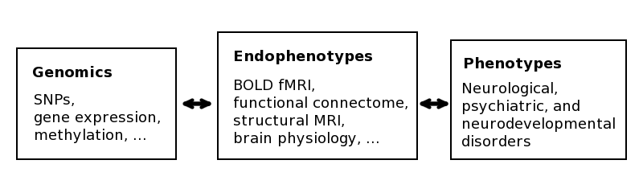
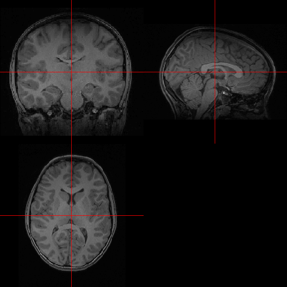
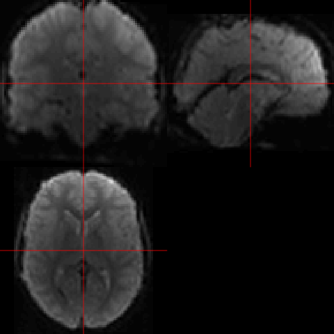
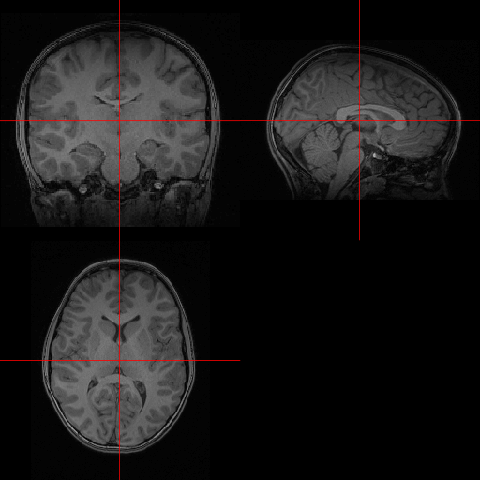
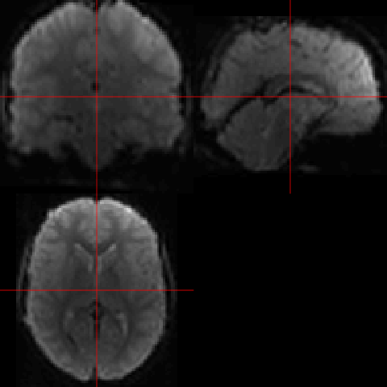
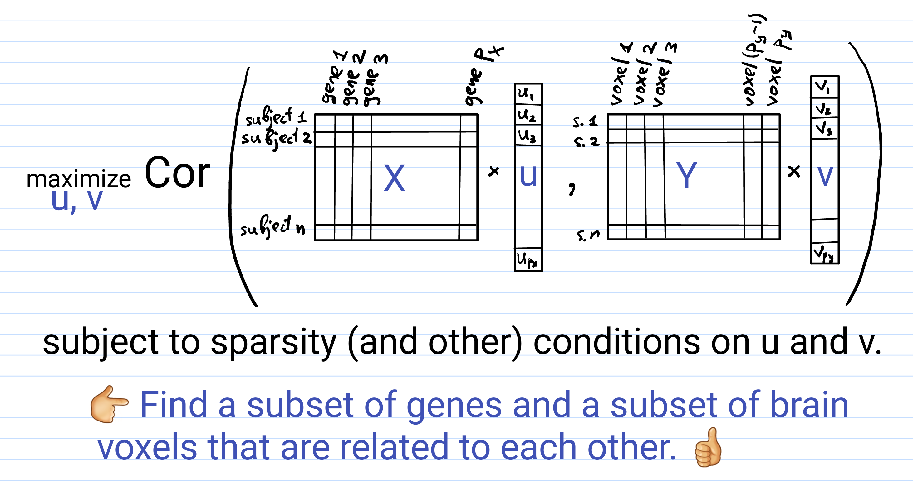

Regaining control of false findings in feature selection, classification, and prediction on neuroimaging and genomics data
A PhD prospectus presentation for the Bioinnovation PhD Program at Tulane University.
Alexej Gossmann
March 12, 2018
Precision Medicine
Inter-personal diversity in the patients' biology
⇾ differences in disease susceptibility/progression
⇾ differences in treatment efficacy
⇾ "personalized" treatment plans.
Precision Medicine
- New drugs and devices targeting specific subpopulations (or even individuals).
- No more treatment based on trial-and-error.
- ↑ Quality of healthcare
- ↓ Treatment time and cost.
Precision Medicine
Made possible by:
- Big data including genomics and neuroimaging.
- Computational methods including machine learning and modern statistics.
Precision Medicine & Mental Disorders
Heritability of mental disorders. Neuroimaging as an endophenotype, e.g., use of fMRI to monitor & guide drug treatment [Weickert et al., 2004, Apud et al., 2007,Goldstein-Piekarski et al., 2016].
Source: Images by Thomas Shafee [CC BY 4.0] via Wikimedia Commons.
.gif) 



From left to right: (1) Animation by Dwayne Reed at English Wikipedia [CC BY-SA 3.0] via Wikimedia Commons. (2) T1-weighted MRI of a randomly chosen subject from the Philadelphia Neurodevelopmental Cohort, before preprocessing, $192\times 256 \times 160$ voxels.(3) fMRI of the same subject at a fixed time point, after preprocessing, $79\times 95\times 79$ voxels measured at $>200$ time points.
.gif){kind=link}
Resources and collaborators
- The Multiscale Bioimaging and Bioinformatics Laboratory (MBB) at Tulane University
- Tulane Center for Bioinformatics and Genomics (CBG)
- FDA, Office of Science and Engineering, Division of Imaging, Diagnostics, and Software Reliability
- Other: The Mind Research Network, University of Wrocław, Indiana University Bloomington, University of Tennessee Health Science Center.
Regression Models
$$y = f(x\subscript{1}, x\subscript{2}, \ldots, x\subscript{p}) + \varepsilon,$$ where $x\subscript{1}, x\subscript{2}, \ldots, x\subscript{p}$ are predictor variables (DNA mutations, brain activations, age, gender, etc.), $\varepsilon$ is random noise, and $y$ is the phenotype.
Human DNA $\approx 3\cdot 10^9$ bp ⇝ vast majority not related to phenotype of interest ⇝ sparse models $$\Rightarrow y = f(x\subscript{a\subscript{1}}, x\subscript{a\subscript{2}}, \ldots, x\subscript{a\subscript{m}}) + \varepsilon,$$ where $\{a\subscript{1}, a\subscript{2}, \ldots, a\subscript{m}\} \subset \{1,2,\ldots,p\}$ is a small subset ($m \ll p$).
The two-faced model selection problem
Prediction: Feature selection:
Find best predictions for $y$. Which $x\subscript{j}$ are predictive?
Two types of false findings
False positives. False discoveries.
Overfitting. Curse of dimensionality.
Multiple hypotheses testing
Alternatively, feature selection can be regarded as testing the $p$ hypotheses $$H\subscript{i} : \beta\subscript{i} = 0, \quad i = 1,\ldots,p.$$
- $R := $ number of rejected hypotheses
- $V := $ number of false rejections (i.e., Type I errors).
- Family-wise error rate: $\mathrm{FWER} = \mathbb{P}(V \geq 1)$. E.g., Bonferroni, Holm (1979), Hommel (1988).
- False discovery rate: $\mathrm{FDR} = \mathbb{E}\left( \frac{V}{\min\{R, 1\}} \right)$. E.g., Benjamini-Hochberg (1995), Benjamini-Yukutieli (2001).
Group SLOPE Motivation
- Divide the data into groups by correlation.
- Then select/drop entire groups rather than individual variables.
- Redefine FDR w.r.t. groups: gFDR.
Group SLOPE
- $\mathbf{y} = X\boldsymbol{\beta} + \boldsymbol{\varepsilon}$, $X\in\mathbb{R}^{n\times p}$, $\boldsymbol{\beta}\in\mathbb{R}^p$, $\boldsymbol{\varepsilon}\sim\mathrm{N}(0, \sigma\subscript{\varepsilon}^2 I)$.
- $\boldsymbol{\beta}$ divided into $J$ groups of sizes $p_1, p_2, \cdots, p_J$, i.e. $\boldsymbol{\beta} = (\boldsymbol{\beta}_1^T, \boldsymbol{\beta}_2^T, \ldots, \boldsymbol{\beta}_J^T)^T$ with $\boldsymbol{\beta}_i \in \mathbb{R}^{p_i}$.
$$\min\subscript{\mathbf{b}\in\mathbb{R}^p} \frac{1}{2} \left\lVert\mathbf{y} - X\mathbf{b}\right\rVert\subscript{2}^2 + \sum\subscript{i=1}^J \lambda\subscript{i} \sqrt{p\subscript{(i)}}\left\lVert X\subscript{(i)} \mathbf{b}\subscript{(i)}\right\rVert\subscript{2},$$ where $\sqrt{p\subscript{(1)}}\left\lVert X\subscript{(1)} \mathbf{b}\subscript{(1)} \right\rVert\subscript{2} \geq \sqrt{p\subscript{(2)}}\left\lVert X\subscript{(2)} \mathbf{b}\subscript{(2)} \right\rVert\subscript{2} \geq \ldots$
Group SLOPE - Theoretical results
- Given a user-specified $q \in (0, 1)$, we provide several procedures to select $\boldsymbol{\lambda}$, such that
$$\mathrm{gFDR} \leq q,$$
[Gossmann et. al., 2015], [Brzyski, Gossmann, et. al., 2018] and [Gossmann et. al., 2018].
Confirmed with extensive simulation studies on synthetic and real data (not shown). - Optimality in estimation (asymptotically minimax [Brzyski, Gossmann et. al., 2018]).
Application - Framingham Cohort
- SNP data for 8915 subjects.
- 1771 subjects have corresponding spine BMD measurements.
- The remaining ~7000 subjects used to group SNPs.
$X$ with dimensions $1771 \times 117933$, consisting of 6403 groups of average size 18.42 (median size 2).
Canonical Correlation Analysis
Classical canonical correlation analysis
$$\mathrm{maximize}\subscript{u\in\mathbb{R}^p, v\in\mathbb{R}^q} \widehat{\mathrm{Cov}}(Xu, Yv) = \frac{1}{n} u^T X^T Y v,$$ $$\mathrm{subject\,to} \quad \widehat{\mathrm{Var}}(Xu) = 1, \widehat{\mathrm{Var}}(Yv) = 1.$$ [Hotelling, 1936]
The problem is degenerate if $n \leq \mathrm{max}\left( p, q \right)$.
Fragments
Hit the next arrow...
... to step through ...
... a fragmented slide.
Fragment Styles
There's different types of fragments, like:
grow
shrink
fade-out
fade-up (also down, left and right!)
current-visible
Highlight red blue green
Transition Styles
You can select from different transitions, like:
None -
Fade -
Slide -
Convex -
Concave -
Zoom
Themes
reveal.js comes with a few themes built in:
Black (default) -
White -
League -
Sky -
Beige -
Simple
Serif -
Blood -
Night -
Moon -
Solarized
Slide Backgrounds
Set data-background="#dddddd" on a slide to change the background color. All CSS color formats are supported.
Image Backgrounds
<section data-background="image.png">Tiled Backgrounds
<section data-background="image.png" data-background-repeat="repeat" data-background-size="100px">Video Backgrounds
<section data-background-video="video.mp4,video.webm">... and GIFs!
Background Transitions
Different background transitions are available via the backgroundTransition option. This one's called "zoom".
Reveal.configure({ backgroundTransition: 'zoom' })Background Transitions
You can override background transitions per-slide.
<section data-background-transition="zoom">Pretty Code
function linkify( selector ) {
if( supports3DTransforms ) {
var nodes = document.querySelectorAll( selector );
for( var i = 0, len = nodes.length; i < len; i++ ) {
var node = nodes[i];
if( !node.className ) {
node.className += ' roll';
}
}
}
}
Code syntax highlighting courtesy of highlight.js.
Marvelous List
- No order here
- Or here
- Or here
- Or here
Fantastic Ordered List
- One is smaller than...
- Two is smaller than...
- Three!
Tabular Tables
| Item | Value | Quantity |
|---|---|---|
| Apples | $1 | 7 |
| Lemonade | $2 | 18 |
| Bread | $3 | 2 |
Clever Quotes
These guys come in two forms, inline: The nice thing about standards is that there are so many to choose from
and block:
“For years there has been a theory that millions of monkeys typing at random on millions of typewriters would reproduce the entire works of Shakespeare. The Internet has proven this theory to be untrue.”
Intergalactic Interconnections
You can link between slides internally, like this.
Speaker View
There's a speaker view. It includes a timer, preview of the upcoming slide as well as your speaker notes.
Press the S key to try it out.
Export to PDF
Presentations can be exported to PDF, here's an example:
Global State
Set data-state="something" on a slide and "something"
will be added as a class to the document element when the slide is open. This lets you
apply broader style changes, like switching the page background.
State Events
Additionally custom events can be triggered on a per slide basis by binding to the data-state name.
Reveal.addEventListener( 'customevent', function() {
console.log( '"customevent" has fired' );
} );
Take a Moment
Press B or . on your keyboard to pause the presentation. This is helpful when you're on stage and want to take distracting slides off the screen.
Much more
- Right-to-left support
- Extensive JavaScript API
- Auto-progression
- Parallax backgrounds
- Custom keyboard bindings